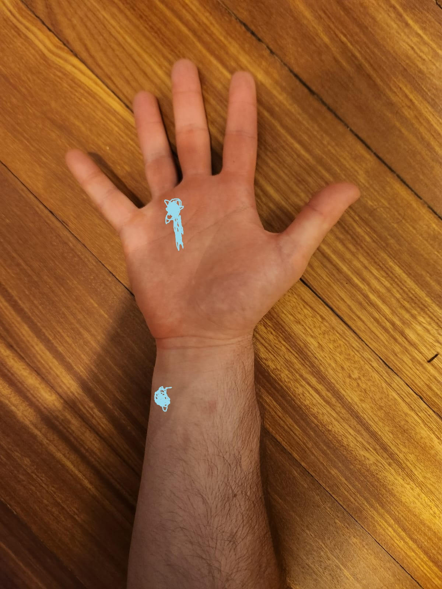

Injured Finger
Well it was bound to happen sooner or later, I've been bouldering for 3+ years now more or less. The most severe injury that I had was around 1.5 years ago when my rotator cuff was aching when I was reaching up to holds.
Yesterday I went bouldering, in general the entire day I felt a bit off, like not really there. Welp, went to Bouldering, had some ruff start and didn't really warm up correctly. And then went onto a dino route, the last hold was a crimp. I held it for dear life with really bad form and basically hanged my entire body weight on 3 fingers aaaaaaand *POP*!
Felt funky at first but okay, I guess my body didn't really process what happened. So I took it a bit easy but continued climbing. As I cooled down it became more hard to move my finger and to close my hand.
The finger in question is my ring finger and the pain is mostly in the lower part of my forearm and the middle part of palm in my hand.

Always heard that finger injuries are the worst, so here we go. Hope it can recover fairly quickly.
Today when I woke up it was horrible, barely could close my hand, or even move my finger! But it got better as the day went on